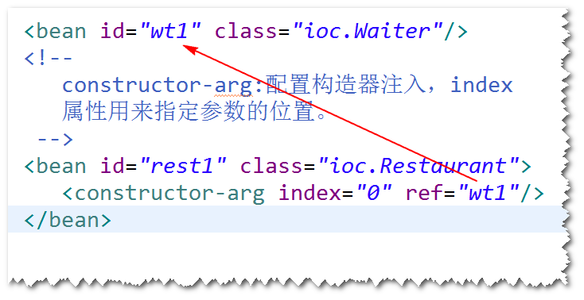

开源的，用来简化企业级应用开发的应用开发框架。
注:
a.简化开发: Spring框架对常用的api都做了封装，比如
对jdbc就做了一套封装(Spring Jdbc),使用SpringJdbc
访问数据库，就不再需要考虑如何获取连接与关闭连接等
操作了。
b.解耦: Spring帮我们管理对象之间的依赖关系（对象之间的耦合度降低了），这样软件的维护性得到提高。
c.集成其它框架:Spring可以很好地和其它的一些框架进行集成，这样，
使用这些框架就更方便了。
Spring框架中的一个核心模块，用来管理对象。
注:
管理对象：对象的创建、销毁、初始化等等操作，以及
对象之间的依赖关系。
step1.导包。 spring-webmvc
step2.添加Spring配置文件。
step3.启动容器。
step1.为类添加无参构造器或者直接使用缺省构造器。
step2.在配置文件当中，添加bean元素。
step3.启动容器，调用容器提供的一个方法(getBean)。
1)默认情况下，对于某个bean元素，容器只会创建一个实例。
2)如果将作用域设置为"prototype"，容器会创建多个实例。
使用init-method属性指定初始化方法。
使用destroy-method属性指定销毁方法。
注意：只有作用域为singleton时，销毁方法才会执行。
容器启动之后，会将所有作用域为singleton的bean先创建好。
(当调用getBean方法时才会创建）
对象之间的依赖关系由容器来建立。
容器通过调用set方法或者构造器来建立对象之间的依赖关系。
注:
IOC是目标，DI是手段。
a.方式一 set方法注入
step1. 添加set方法。
step2. 在配置文件当中，使用<property>来配置set方法注入。
step3. 启动容器，调用getBean方法。

b.方式二 构造器注入
step1. 添加相应的构造器
step2. 在配置文件当中，使用<constructor-arg>来配置构造器注入。
step3. 启动容器，调用getBean方法。

a.容器默认情况下，是不会自动装配的。
b.可以让容器依据某些规则，自动建立对象之间的依赖关系
（仍然需要调用set方法或者构造器）。
注：自动装配建议少用，如果要使用，建议使用byName。